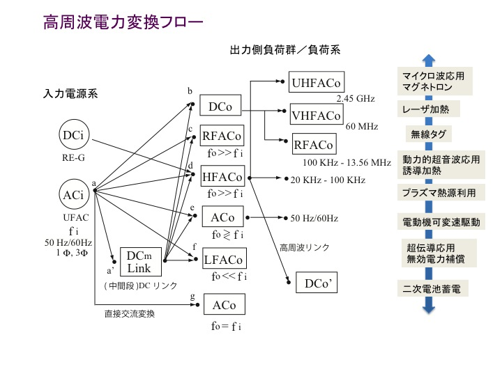
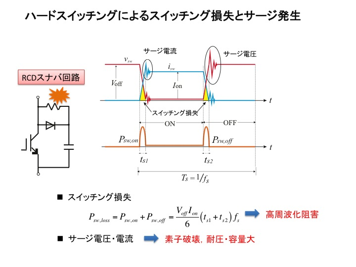
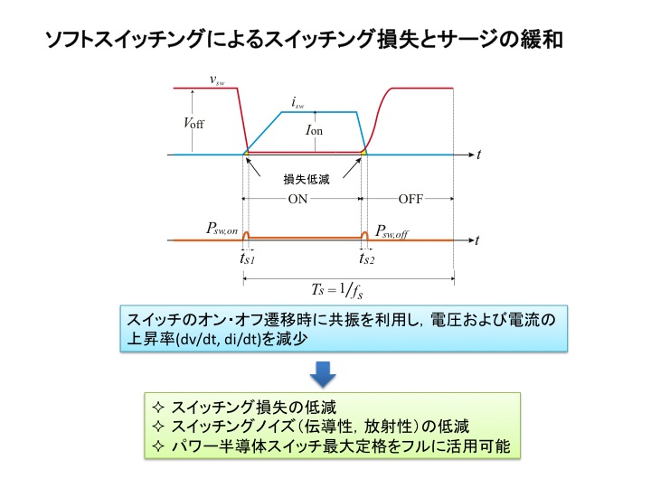

パワーエレクトロニクス（Power Electronics）
化石燃料の枯渇と地球温暖化への対策として，電気エネルギー発生から消費に至るまでの電力変換制御プロセスの高度化と高効率化が求められています。その要素技術として，電気エネルギーの発生・生成手段を見れば，太陽光・風力・地熱・潮力と言った自然エネルギー・再生エネルギー利用する「創エネ」技術，バッテリやキャパシタ，フライホーイルなどの化学／機械エネルギー蓄積装置と取入れた「蓄エネ」技術，そして電気電子機器そのものの消費電力を抑制する「省エネ」技術が挙げられます。
この電気エネルギー有効利用に貢献する技術として，当研究室ではパワー半導体電力素子を駆使し，その高周波スイッチング技術を巧みに取入れた電力変換回路とその応用電源システムの構築を主眼とするパワーエレクトロニクスに関する研究を行っています。従来，「電力」「電子」「制御」の複合境界領域として位置づけられる”古典的パワーエレクトロニクス"から，「通信」「機械」「熱」「化学」 といった様々な技術分野を取り込んだ複融合領域となる”先進パワーエレクトロニクス"を独自に提唱し，より高性能・高効率な電力変換システムの創出を目指します。


電気エネルギー応用と電力変換システム
パワーエレクトロニクス（以下，パワエレ）機器の性能は，第１に電力変換効率によって評価されます。すなわち，入力電力に対する出力電力の割合（実測効率）です。これは，パワエレ回路が電源と負荷との"インターフェース" として捉えられることと深く関係します。
電力変換システムは，電源（商用電力，再生可能エネルギー電源）とエネルギー変換・利用機器の間で，電圧・電流・周波数・位相・相数など電気諸量を負荷に見合うかたちで変換するための中間段変換媒体としてパワエレ回路は位置付けられます。これら主回路部分を”パワーエレクトロニクス”と定義すれば，これらからの情報を検出し処理した上でパワエレ回路へ指令を出す部分が”マイクロエレクトロニクス”と呼ばれます。高効率な電力変換システムを構築し電気エネルギーを有効に利用するためには，これらを"システム"として運転し， エネルギーロスの削減と同時に高度な電力制御とエネルギーマネージメントが不可欠です。

"電力周波数"の利用と高周波パワーエレクトロニクス
パワエレ回路・機器の進展によりもたらされた技術革新の最たるものは，”電力周波数の有効利用”です。高速なパワー半導体スイッチを活用し，電源周波数（商用および直流）から遥かに高い高周波交流を得て，熱・光・振動・プラズマなどエネルギーへと変換することができ，多種多様の電気電子機器を利用することができます。


パワー半導体スイッチの高速なオンオフ（スイッチング）動作により，インダクタ（コイル）やキャパシタ（コンデンサ）などの受動部品の容量・体積が低減し装置全体の小型化が有利となることや，制御応答性の向上などのメリットが期待できます。
一方で，高速なスイッチング動作にともない，パワー半導体スイッチのスイッチング損失の増加や伝導性・放射性ノイズなどの発生が新たに問題点として浮上します（ハードスイッチング）。その対策として，パワー半導体スイッチのオンオフ遷移時に電圧・電流のいずれか一方または両方を緩やかに上昇・下降させ，その重なり区間（オーバーラップ領域）をできる限り小さくする”ソフトスイッチング”転流技術が効果的です。
当研究室では，このソフトスイッチングを導入した高周波電力変換回路に着目し，太陽光や燃料電池などの再生可能・新エネルギー発電や，自動車・船舶・鉄道などの輸送・交通機器，金属熱処理などの誘導加熱機器，電磁調理器具を主とするホームエレクトロニクス機器，さらには電線を使用せずワイヤレスにて電力を伝送する非接触給電装置などへ応用できる電源システムの開発に積極的に取り組んでいます。


パワーエレクトロニクス回路の提案から電気エネルギー利用機器への応用まで
パワーエレクトロニクス領域で現在注目を集める研究課題のうち，当研究室では以下を含む高周波電気エネルギー変換応用に関するテーマに取組んでいます。
- 高周波共振形インバータと産業用高周波誘導加熱システムへの応用
- 共振形電力変換器を適用した電磁誘導方式非接触電力伝送装置
- 車両・船舶用バッテリ充放電制御電力双方向DC-DCコンバータ
- ワイドバンドギャップパワーデバイスを適用した高周波共振形インバータとその応用
- 離島型DCマイクログリッド分散電源システム低圧負荷給電用DC-DCコンバータ
試作装置を用いた実験検証を中心に活発な研究活動を展開してます。研究室ゼミでは，基礎的な要素技術の講義に始まり，各自の研究成果報告など教員・学生間の学術的な交流を大切にしています。国内の学会・研究会や海外での国際会議にも積極的に参加し研究発表を行うと同時に，最新のパワエレ技術の吸収に研究室一丸となって取組んでいます。


具体的な研究テーマについては，こちらを参照ください。